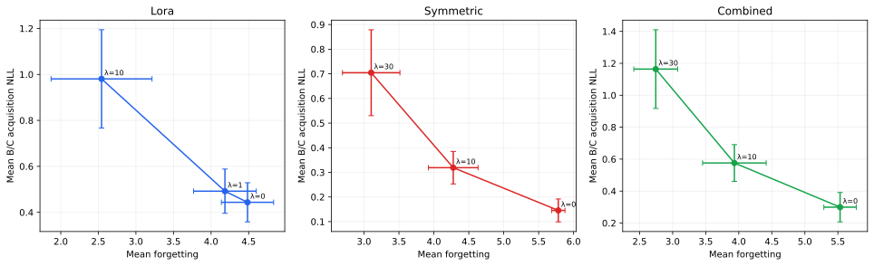

RESEARCH PROJECT 02 · 2026 MANUSCRIPT
Stability–Plasticity Control
Stability–Plasticity Control in Parameter-Efficient Continual Factual Learning: EWC across Linear, Quadratic, and Combined Low-Rank Adapters
Online empirical diagonal-Fisher EWC is evaluated across linear, quadratic, and Combined low-rank adapters in a no-replay A→B→C factual-learning sequence. The study separates a seed-42 coefficient sweep from two out-of-selection replication seeds.
Federico Lolli